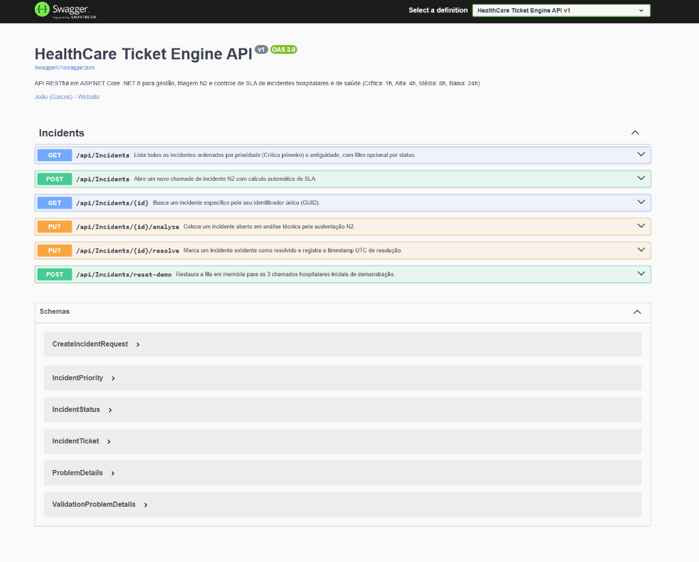

Meu papelArquiteto & Dev Backend .NET
Stack PrincipalC# · .NET 8 · ASP.NET Core
Deploy & StatusEm Produção (Render Cloud)
O Desafio do Setor de Saúde
Em ambientes hospitalares e operadoras de saúde, falhas de autorização de guias TISS, timeouts em consultas de exames e indisponibilidade de prontuários eletrônicos não podem esperar: cada minuto de atraso afeta o atendimento ao paciente e acarreta pesadas sanções regulatórias da ANS. O desafio foi criar uma plataforma capaz de priorizar rigorosamente o tempo restante de SLA e prover controle N2 imediato.
Destaques da Arquitetura Técnica
- Motor dinâmico de SLA hospitalar: Crítica (1h), Alta (4h), Média (8h) e Baixa (24h) com cálculo de contagem regressiva em tempo real
- API RESTful construída em ASP.NET Core .NET 8 com Swagger OpenAPI 3.0 para consumo por microsserviços hospitalares
- Dupla interface integrada: Front-end operacional responsivo para triagem médica/suporte e documentação interativa Swagger para desenvolvedores
- Workflow N2 completo: Abertura ➔ Triagem/Início de Análise N2 ➔ Resolução com registro UTC de compliance
- Resiliência e testabilidade: Endpoint de redefinição de demonstração (/reset-demo) para validação contínua
Impacto e Aprendizados
Consolidação de conceitos corporativos de Clean Architecture no .NET 8, injeção de dependência nativa, modelagem de regras de negócio estritas para saúde (padrões TISS/TUSS) e deploy contínuo em nuvem via containers/cloud runner com monitoramento ativo.
Painel Operacional N2 Hospitalar
Visualização consolidada de volumetria, cartões de chamados com prazos de SLA, status dinâmico e ações rápidas de análise e resolução.

API RESTful .NET 8 (Swagger UI)
Documentação técnica interativa da API permitindo testar diretamente as requisições GET, POST, PUT e validações de esquema.